Burgeri serioși
Chiflă rumenă, texturi generoase și combinații potrivite pentru o zi activă la munte.
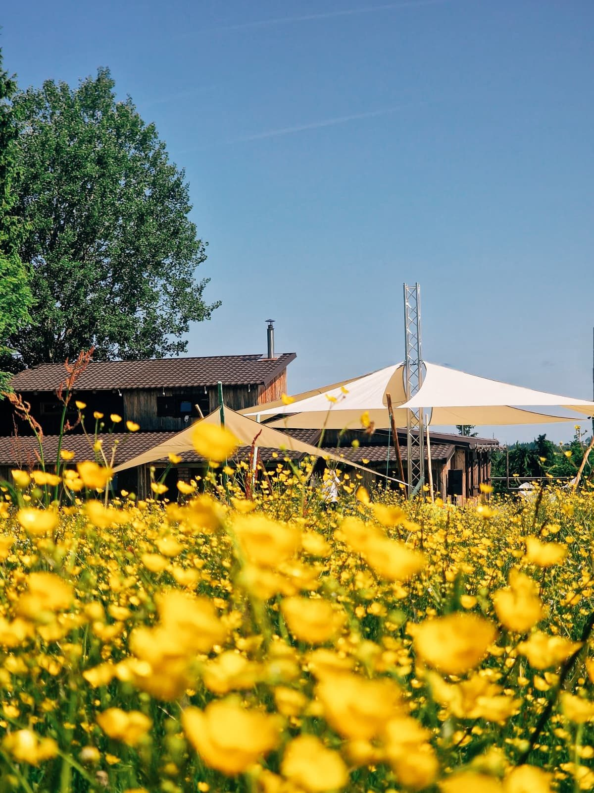
Mărișel · Apuseni · 1250 m
Restaurant de munte, après-ski, terasă, biciclete, echipamente de iarnă și evenimente în natură. Un loc cald, viu și autentic lângă pârtiile de ski Mărișel.
Restaurant & après-ski
După Ski la wU este un mountain lodge contemporan, cald și primitor. Aici ziua începe pe pârtie sau pe traseu și continuă la masă, cu preparate consistente, băuturi alese, muzică bună și atmosferă relaxată.
Vara se deschide terasa dintre flori și iarbă, iarna cabana devine punctul de întâlnire după ski. Nu e doar restaurant: e loc de comunitate, prieteni, evenimente și experiențe de munte.

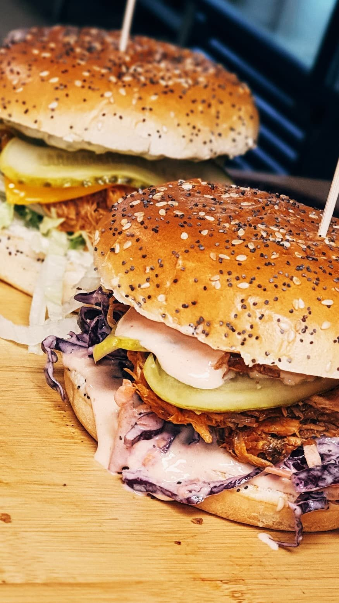
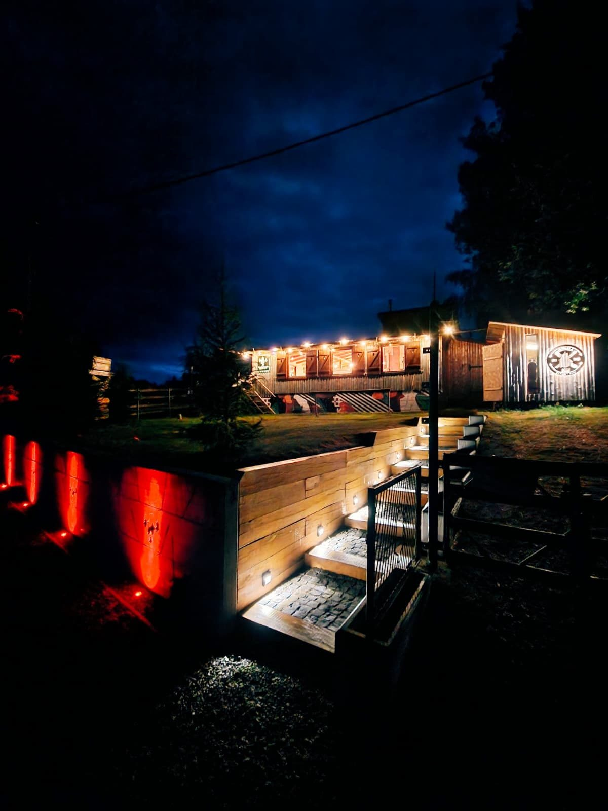
Gust de munte
Chiflă rumenă, texturi generoase și combinații potrivite pentru o zi activă la munte.

Farfurii calde, simple și gustoase, bune după ski, plimbare sau ploaie de vară.

Răcoritoare, cafea și ceva bun de stat la povești cu priveliștea verde din jur.


Those summer days
În sezonul cald, spațiul exterior devine loc de prânz, joacă, socializare și evenimente. Pânzele de umbrire, mesele din lemn și câmpul verde creează o atmosferă naturală, perfectă pentru familii, grupuri și prieteni.
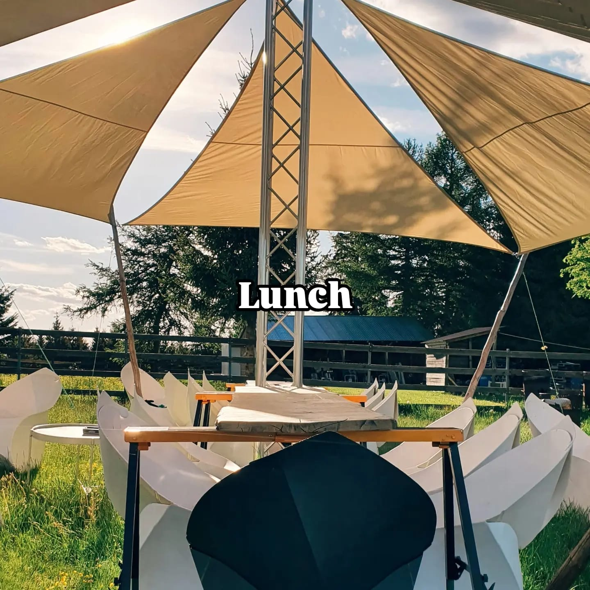
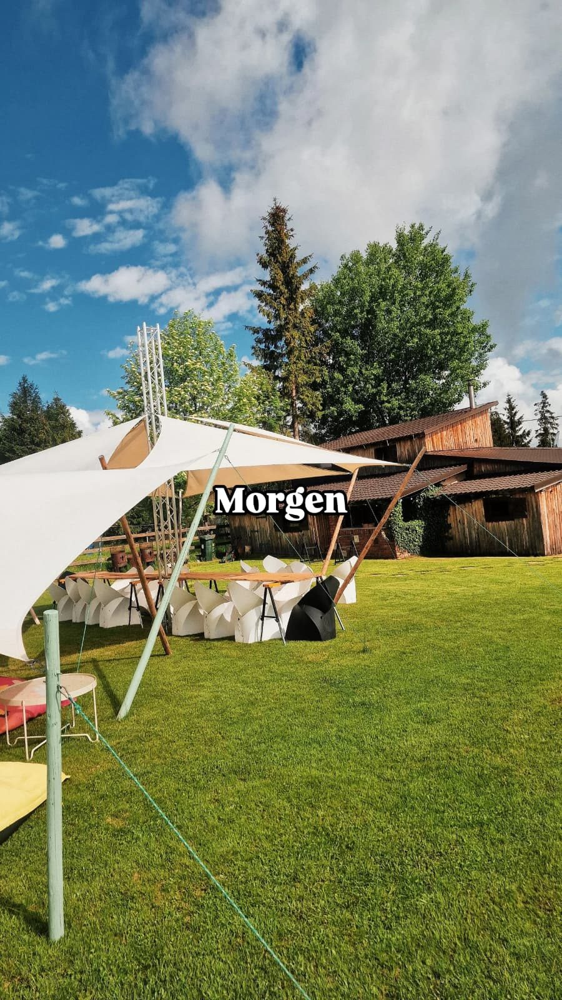
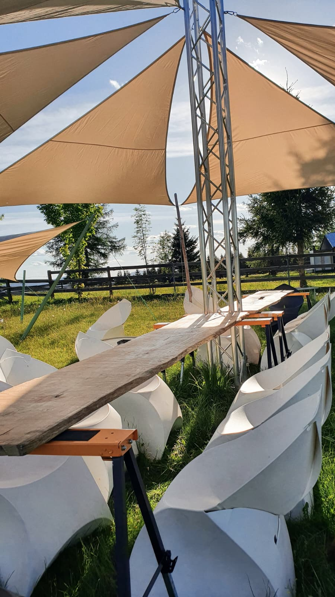
Tot ce găsești la DSLW
Am preluat din site-ul vechi toate direcțiile importante și le-am ordonat într-o experiență mai clară: mâncare, sport, evenimente, natură și meșteșug.
Mâncare bună, băuturi, cabană caldă, seri cu muzică și atmosferă de munte lângă pârtiile Mărișel.
Hardtail, full suspension și e-bike-uri pentru ture ghidate sau plimbări în Apuseni.
Închirieri ski, snowboard, boots, clăpari, căști și splitboard pentru sezonul rece.
Instructori pentru începători, copii, grupuri și cei care vor să-și stăpânească mai bine skiurile.
Evenimente corporate, teambuilding-uri și activități cu impact pentru companii.
Interior, terasă și spațiu exterior pentru petreceri private și evenimente mari.
Nunți în natură, priveliști de munte și echipă care poate construi o zi memorabilă.
Țesut la război, gherghef, lână naturală și obiecte cu spirit local.
Centru de închiriere · vară
Un proiect de munte pentru cei care vor două roți, aer curat și trasee printre văi și brazi. Închirierile se fac cu cel puțin o zi înainte, telefonic sau pe WhatsApp.
27.5” – 29”
100 lei / ziWeekend: 100 lei / zi27.5”
150 lei / ziWeekend: 150 lei / zi27.5”
170 lei / ziWeekend: 170 lei / zi29”
180 lei / ziWeekend: 180 lei / zi3–4 zile: 10% · 5–6 zile: 15% · 7–14 zile: 20% · peste 14 zile: 30%
Cască obligatorie inclusă, echipament de protecție, plus număr limitat de camere GoPro și ceasuri Garmin VivoActive.
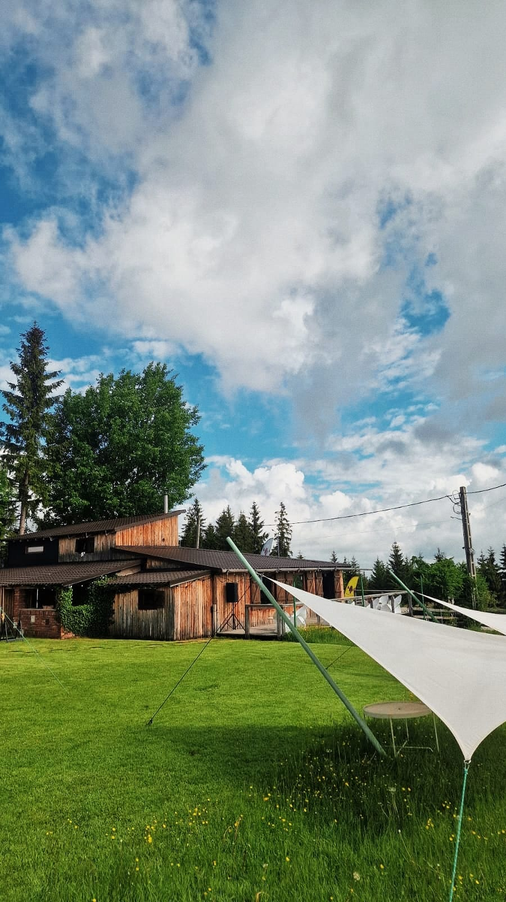
Ride in Apuseni
Biciclete pentru familii, grupuri și rideri mai experimentați: ture ușoare sau dificile, scurte sau lungi, cu posibilitate de tur ghidat de o zi sau două, cu camping ori cazare contra cost.
E-bike-urile asistă pedalarea pe trasee variate și pot ajunge, în condiții bune, la autonomie estimativă de 50–80 km, cu maxim ideal de 120 km pe traseu plat și nivel scăzut de asistență.
Centru de închiriere · iarnă
Partea de iarnă rămâne vizibilă și clară, dar integrată în povestea completă DSLW.
Instructori pregătiți pentru copii, începători și grupuri. Pachetele și disponibilitatea se confirmă telefonic.
Întreabă de instructorEvents at 1250 m
Din 2014, echipa DSLW organizează evenimente pentru companii și grupuri, cu peste 5.000 de participanți. Spațiul interior poate primi cel puțin 130 de persoane, terasa încă 50+, iar zona exterioară poate susține evenimente de până la 900–1000 de persoane.
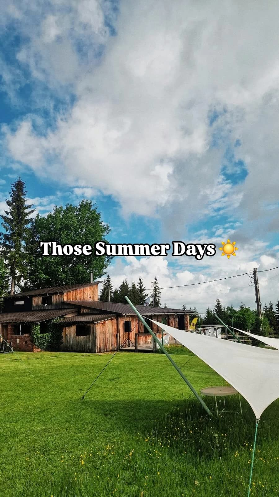
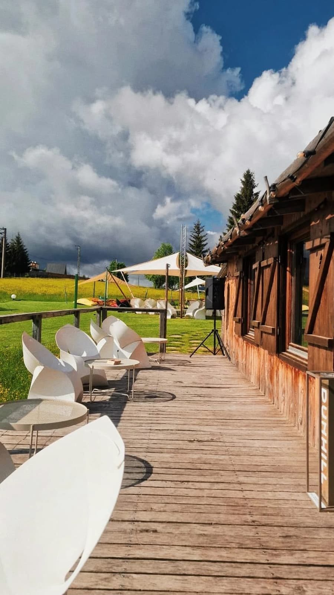
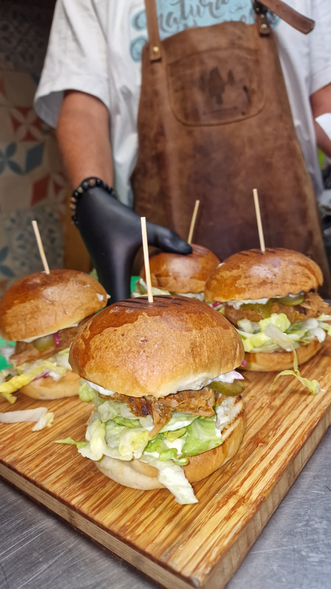
↟ Natura Îți Mulțumește ↟
Asociația s-a născut din drag pentru munte, pădurile din jurul Mărișelului și comunitatea locală. Până acum, au fost plantați peste 42.000 de puieți în zona Mărișel, Apuseni.
Companiile pot integra în experiența lor acțiuni cu impact real: plantări, ecologizare, activități în natură și proiecte care lasă locul mai bun decât l-au găsit.
Ateliere & articole meșteșugărești
DSLW promovează lâna ca materie primă pentru casă și design interior. Atelierele de țesut la război și gherghef aduc o experiență cu spirit vechi, la gura sobei, în mijlocul munților Apuseni.
Galerie
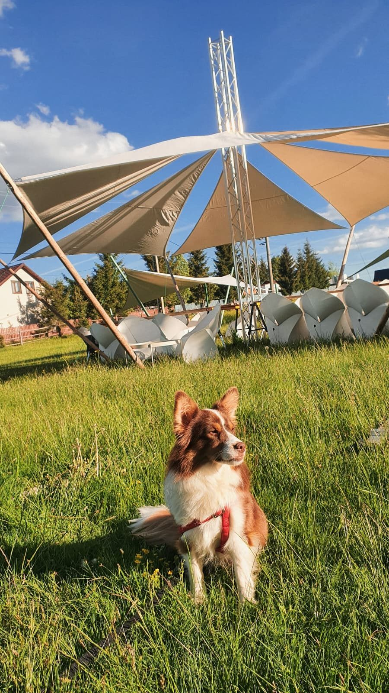
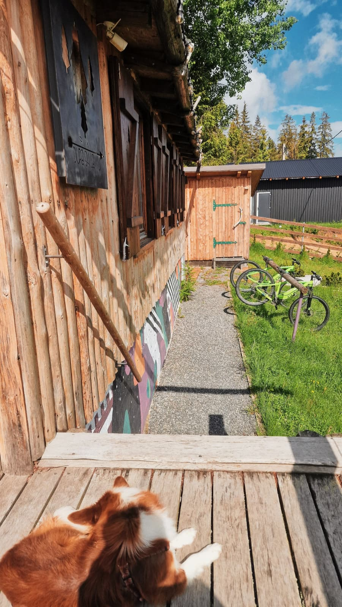
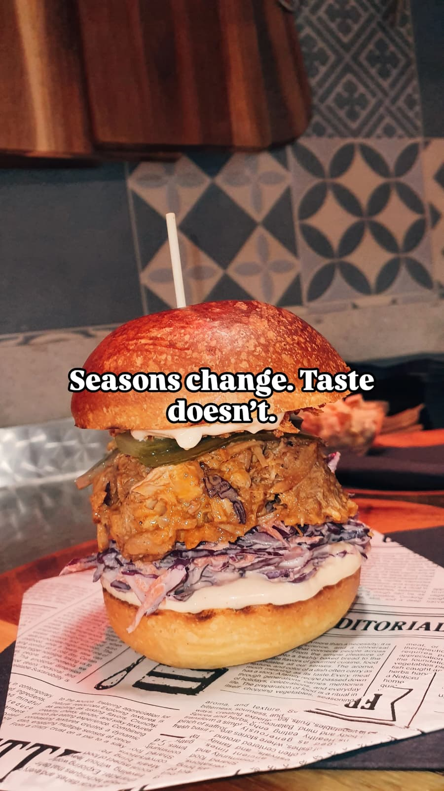
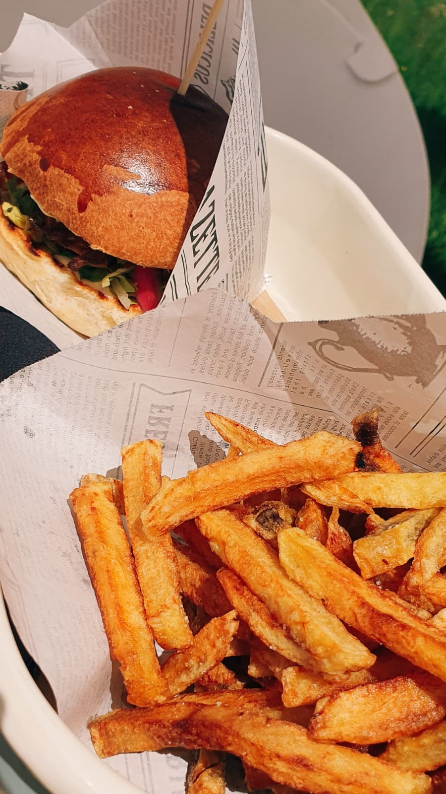
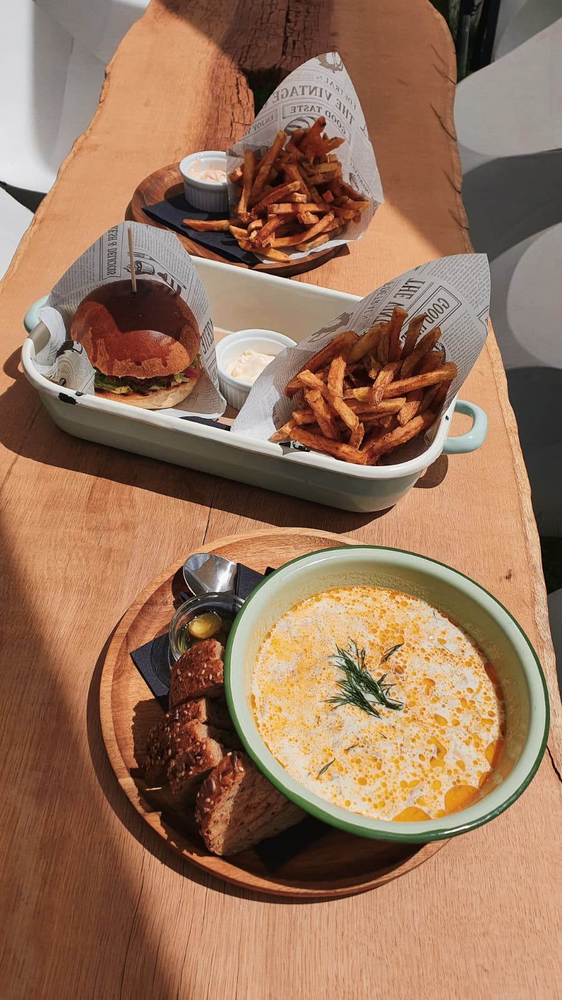
Contact
Dacă ai întrebări despre restaurant, evenimente, închirieri sau rezervări, sună direct sau scrie.